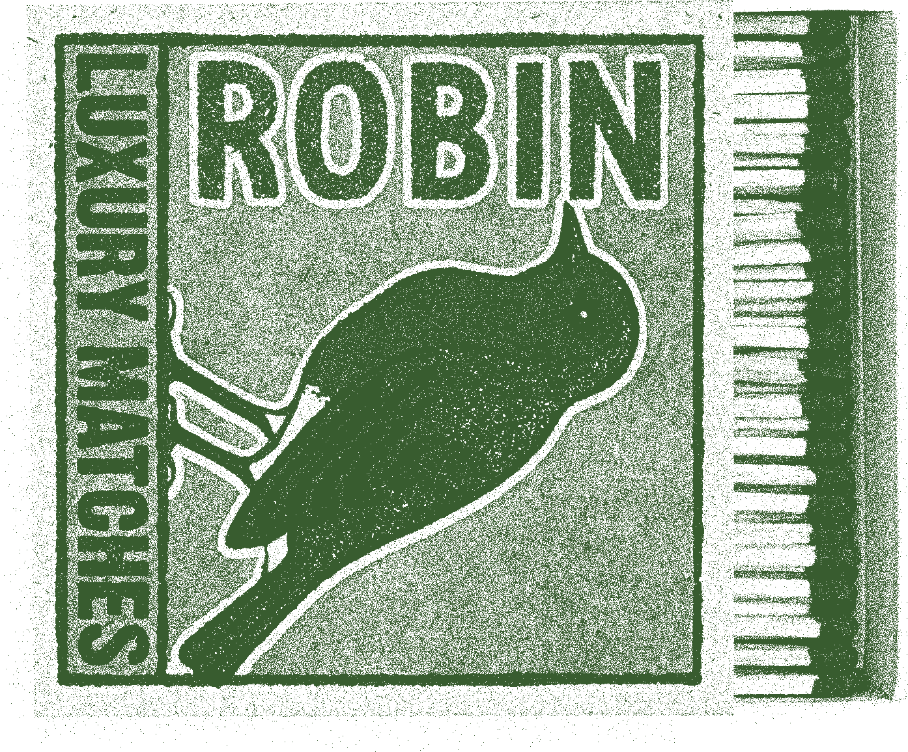
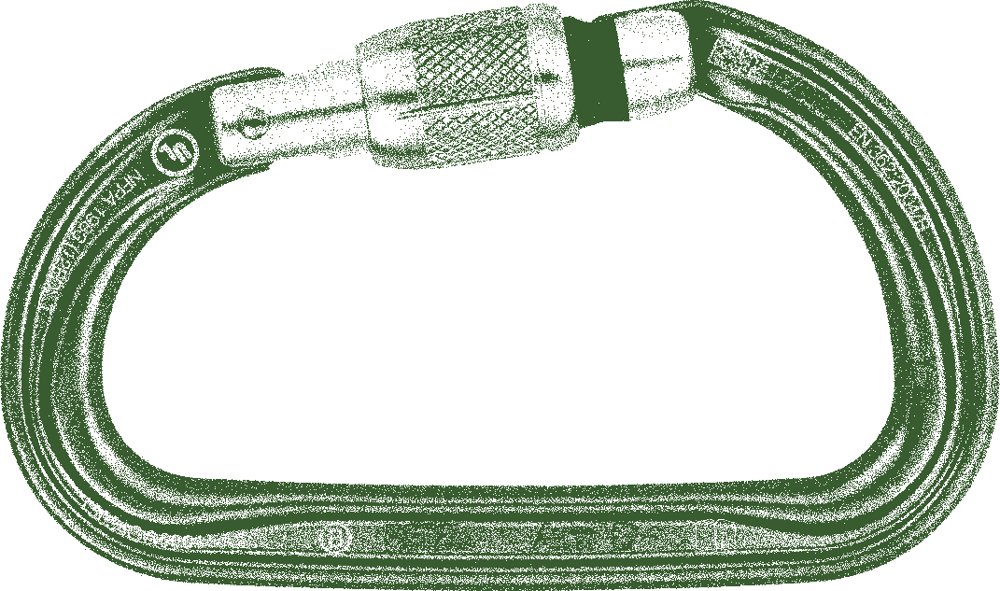
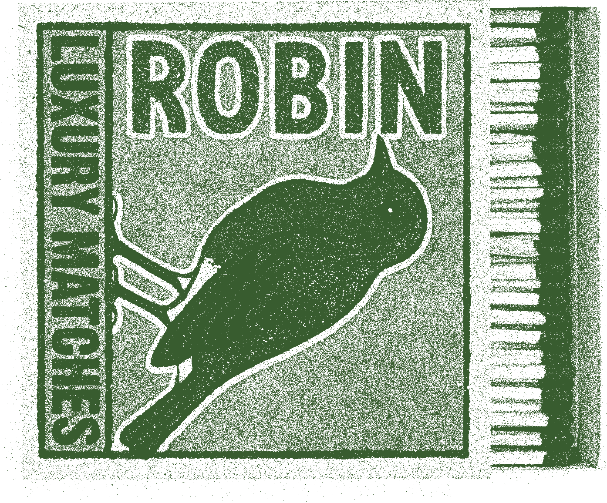
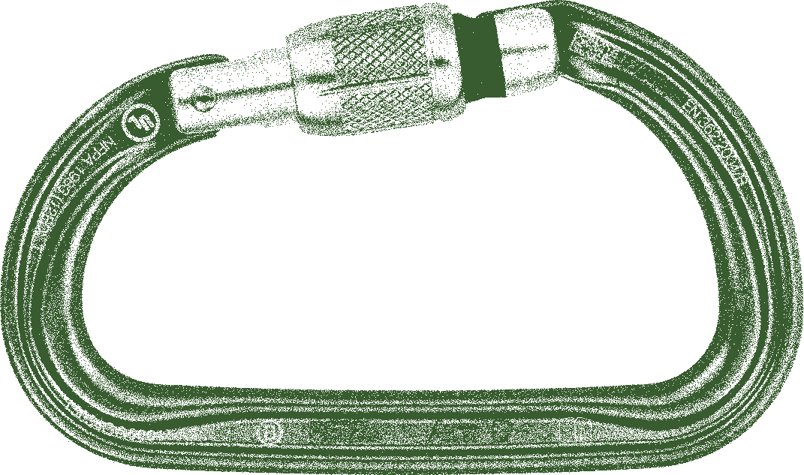

01 Planning
Once you have gathered a group to go camping, get together and have an open discussion. Good planning and organization at the start will reduce any friction, stress, and discomfort that could happen while camping. Plan where you would like to go and when, and establish boundaries and expectations for the group:
- Check in on people’s boundaries around substance use.
- What people’s sleep schedules look like.
- What activities folks would like to do.
- What people’s sleep schedules look like.
- Sleeping arrangements.
- Who has gone camping before and who is new to it.
- Food preferences.
- Accessibility needs.
Collaborate and help each other prepare, making sure that everyone is comfortable throughout the process. Different people can bring different skills to the table. Check where everyone would like to pitch in, for example: setting up tents, planning, cooking, etc.
Research
Knowing and keeping folks’ needs in mind, do some research to decide on the best spot to go camping with your group. Be aware of the amenities and facilities available near the campsite. These vary depending on the campground. Look out for things like: electricity, bathrooms, showers, laundry, drinking water, activities, etc.
- Look at the park map and try to pick a spot that is near facilities if possible, particularly water stations and washrooms.
- If available, look at photos of campsites to determine their privacy level and space for tents.
- Keep in mind group members’ accessibility needs and make sure they’re covered. Most popular provincial parks have accessible campsites, hiking trails, and facilities.
Research local regulations in the area where you’re going camping. Two important regulations to keep in mind are the following:
Moving Firewood
There are many strict regulations regarding the movement of firewood due to the risk of introducing invasive species. Make sure to check the regulations in advance to plan where to acquire firewood.
Fire Risk
Dry summer climate increases the chance of forest fires. Before you leave, make sure to check on the fire risk status. If the risk is too high, you will not be able to make campfires at the campsite.
Site Selection
Some campgrounds require you to reserve your spot in advance, while others are first-come-first-served. Make sure to start planning your trip early to get your preferred spot! Most parks accept reservations up to 5 months in advance of your arrival date.
Determine that kind of site you would like. Some parks have different zones (ex. Dog-free, backcountry, radio-free, etc.) Many parks also offer electrical sites and non-electrical sites. If you have anything that needs to be plugged in (ex. Medical devices, air pumps), opt for an electrical site.
Keep in mind which campground are family-oriented. This is good to know for noise complaints and curfew.
Here are a few resources to start your search for the perfect spot:
Indigenous-Owned Campgrounds & Experiences
Consider staying in an indigenous-owned and operated campsite and signing up for some experiences.
Queer Campgrounds
If you’re queer and would rather stay in community, consider staying at a queer-friendly campsite.
Respect The Land
Be aware of whose land you’re on and its history. Check if there are sacred sites or plants that you should avoid if you’re not a part of that community. See if there’s anything you can do while you are a guest to contribute positively to the land- check out some indigenous-owned businesses in the area (to source natural materials such as food and firewood, for example) and local art galleries to check out. We are so lucky to be able to go camping and access beautiful sites on this land, but it’s important to remember that you are a guest.
Safety Tips
- Inform someone outside your group of your camping plans. Let them know where you will be going and when. If plans change before or during the camping trip, let them know.
- When planning your trip to the campsite, plan to arrive at least a few hours before sunset so you can properly find your way to the site, assess the site, and set up your tents and camping gear.
- Share your location on your phone for the duration of the trip. It may not always be super accurate, but it helps.